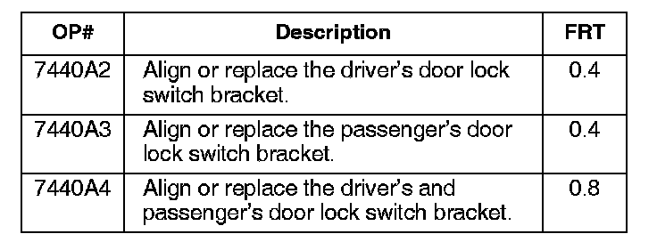
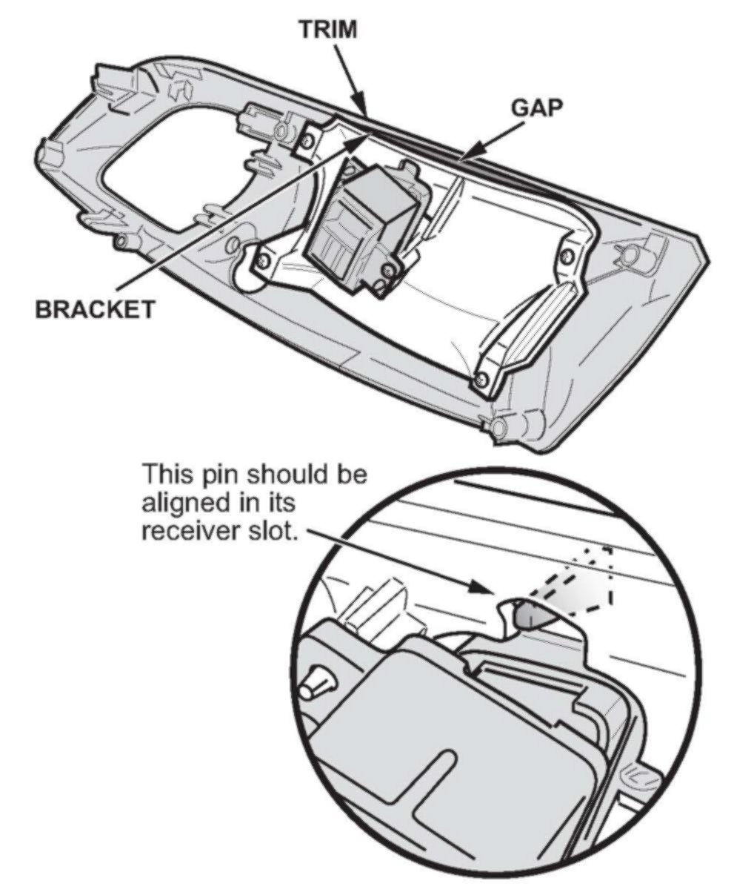
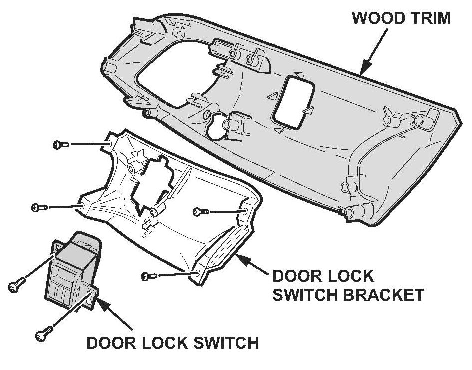

Electrical - Battery Is Low/Dead
07-018March 4, 2009
Applies To:
2007 MDX From VIN 2HNYD28..7H500001 thru 2HNYD28..7H523800
Battery Is Low or Dead From a Sticking Power Door Lock Switch
(Supersedes 07-018, dated April 6, 2007, to revise the information marked by asterisks)
*REVISION SUMMARY
Under PARTS INFORMATION, the driver's and passenger's door lock switch bracket part numbers were reversed.*
SYMPTOM
The driver's or passenger's power door lock switch may stick. This causes the B-CAN to stay on, resulting in a low or dead battery.
PROBABLE CAUSE
A misaligned power door lock switch in the door panel may leave the B-CAN on, drawing about 3 amps.
CORRECTIVE ACTION
Align the power door lock switch bracket. If needed, replace the bracket.
PARTS INFORMATION
Door Lock Switch Bracket:
* Driver's side P/N 83590-STX-A11
Passenger's side P/N 83540-STX-A11*
NOTE:
Order replacement door lock switch brackets after you confirm the original is warped.
WARRANTY CLAIM INFORMATION

In warranty:
The normal warranty applies.
Failed Part: P/N 83590-STX-A11
Defect Code: 07406
Symptom Code: 03220
Skill Level: Repair Technician
Out of warranty:
Any repair performed after warranty expiration may be eligible for goodwill consideration by the District Parts and Service Manager or your Zone Office. You must request consideration, and get a decision, before starting work.
DIAGNOSIS
Lock and unlock the doors using the driver's and passenger's power door lock switches. If the switches stick, have white marks on them, or have any other signs they have been sticking, go to REPAIR PROCEDURE.
REPAIR PROCEDURE
1. Remove the front door panel, then remove the wooden trim containing the power door lock switch from the door panel:
Refer to steps 1 thru 9 on page 20-8 of the 2007 MDX Service Manual (Volume 2), or Online, enter keyword DOOR PANEL and select Front Door Panel Removal/Installation (steps 1 thru 9) from the list.

2. Make sure the door lock switch bracket is flush with the trim. If the bracket is not flush, loosen the four screws, realign the door lock switch bracket, make sure the pin is in the hole as shown, retighten it, then go to step 3.

3. Reinspect the door lock switch bracket to make sure the bracket is flush with the trim.
^ If the bracket is flush, the repair is complete. Reinstall all removed parts.
^ If the door bracket is not flush, replace it:
- Remove the two screws, and remove the door lock switch.
- Remove the four screws, and replace the door lock switch bracket.
- Reinstall the door lock switch.
4. Install the door panel in the reverse order of removal.
5. If needed, repeat the procedure on the opposite door.
6. Make sure the switches do not stick when you lock and unlock the doors.

Disclaimer